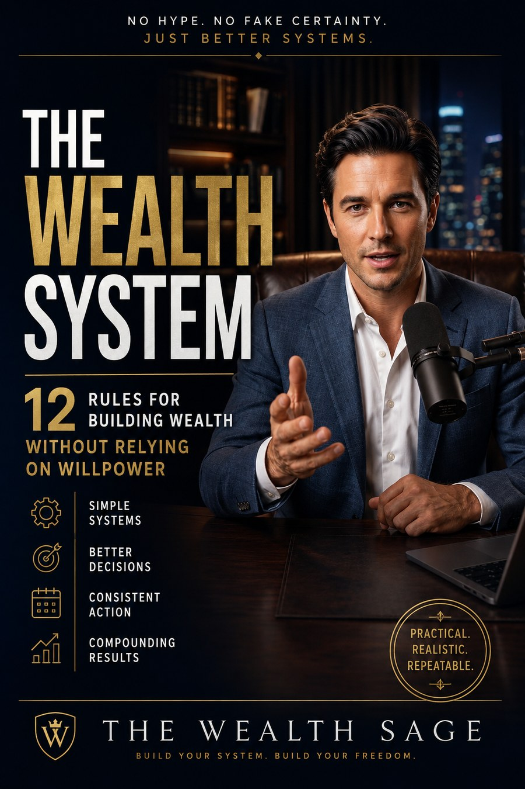

FREE EBOOK · THE WEALTH SAGE
The Wealth
System
12 Rules for Building Wealth Without Relying on Willpower
A practical guide to building financial systems that make better decisions easier to repeat — without hype, shortcuts, or fake certainty.
Your free copy is delivered through The Wealth Sage email system. Enter your email on the next page and download the book immediately.
NOT SURE WHERE YOU STAND?
Measure your financial system before you build it.
Take the Financial System Test to see your current level, strongest area, biggest gap, and the next step that makes the most sense for you.
Take the Financial System Test →01
12 practical formulas
From creating a surplus to building a personal wealth system.
02
30-day builder
A small daily sequence designed to turn ideas into repeatable rules.
03
Printable worksheets
Put your own numbers, rules, and review process on paper.